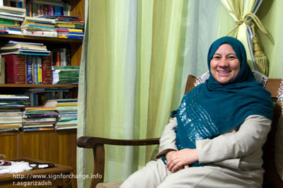

|
|

عادله محسنی؛ فعال حقوق زنان در افغانستان: وقتی شما دنبال یک میلیون امضاء می گردید مساوی با این است که ما دنبال ده هزار امضا در افغانستان بگردیم
جمعه30 بهمن 1388
تغییر برای برابری - عادله محسنی از فعالان زن افغانستان و از فعالان کمپین 50% است .وی در دانشگاه تبریز در رشته حقوق تحصیل کرده و پس از بازگشت به افغانستان تمام تلاشش را برای بهبود شرایط زنان افغانستان به کار گرفته است. گفتگوی رها عسگری زاده را با او می خوانید:

خانم محسنی کمی از وضعیت زنان افغانستان پیش از دوره دوم انتخابات بگویید؟
بیش از 40 درصد رای دهندگان در دوره اول انتخاب ریاست جمهوری زن بودند ولی با روی کارآمدن کرزای، وی برغم همه وعده هایش هیچ سهمی به زنان نداد و حتی اگر می توانست وزارت زنان را هم به مردان می داد.
در دوره موقت سه وزارت خانه را به زنان سپرده بود؛ ,وزارت زنان، وزارت شهدا و معلولین و وزارت جوانان که تازه تاسیس شده بودند و اصلا تجربه قبلی در مورد کار آنان وجود نداشت. بعد هم افرادی که هیچ تجربه کاری نداشتند و کار سیاسی نکرده بودند به وزارت برگزیده شدند. چون پدر خانم بلخی مجاهد بوده و زمان انگلیس با استعمار می جنگیده وزیر شهداو معلولین کردند و خانم افضلی را به دلیل این که شوهرش مجاهد و زرمنده بوده، وزیر جوانان کردند. بعد از سه ماه فهمیدند که این وزارت خانه ها نتیجه نمی دهد، چند وقت بعد وزارت خانه ها را منحل کردند و به همین بهانه که زنان نمی توانند کار کنند قید دادن وزارتخانه به زنان را زدند. بعد از آن هم در کابینه ی کرزای فقط یک زن برای وزارت زنان ماند. این وزارت در افغانستان صلاحیت اجرایی ندارد یعنی فقط برنامه ساز است؛ پلان گذاری می کند، پالیسی ساز است و هیچ ضمانت اجرایی ندارد. بعد هم در افغانستان که تقسیم قدرت بر اساس قومیت است،زنی را وزیر می کنند که یک قومیتی او را حمایت کند مثلا حسن بانو غضنفر که دکترای زبان شناسی دارد وزیر زنان است.
خوب است که وزارت خانه زنان باشد چون اگر باشد ما می توانیم کار کنیم کیفیتش را بالا ببریم و ما زنان جامعه ی مدنی می خواهیم آن را نگه داریم ولی از کارکردش راضی نیستیم.
در افغانستان مرگ و میر زنان خیلی بالاست، وضعیت اجتماعی زنان خراب است و در سیاست مشارکت ندارند، آمار خشونت های خانوادگی بالا است. بررسی همه ی اینها نشان می دهد که به این وزارت خانه احتیاج است ولی به شرطی که کار کنیم. یا حداقل اهرم فشاری روی وزارت خانه های دیگر باشد مثلا بر صحت عامه یا وزارت معارف برای تحصیل دختران باید اهرم فشار باشد. از این لحاظ ما خیلی از کارکرد وزارت زنان راضی نیستیم ولی تلاش می کنیم که آن را نگه داریم چون بارها انتقاد شده که باید وزارت زنان از بین برود و ما همیشه مقاومت کردیم که نگه اش داریم تا بتوانیم در آینده روی آن کار کنیم.
به خاطر همین مسائل و چون در دوره اول ریاست جمهوری به زنان سهم داده نشد و تا وقتی در سیاست به زنان سهم داده نشود در رده های دیگر هم به انها سهم داده نمی شود، قبل از انتخابات دوره دوم ریاست جمهوری کمپینی را راه انداختیم با نام کمپین 50 درصد چون حداقل 50 درصد جامعه ی افغانستان را زنان تشکیل می دهند. ولی چون از بین 75 درصد بیسوادهای افغانستان 90 درصد زن هستند ما نمی توانیم کمپین قوی داشته باشیم. ما نمی توانیم زنان را از خانه بیرون بکشیم، چون سنتی فکر می کنند و مقید هستند و حتی خودشان نمی توانند وضعیت خودشان را درک کنند. حتی زنانی در اطراف هستند که اگر کتک نخورند ناراحت می شوند و می گویند به ما توجه نشد چون فکر می کنند این نشانه محبتی است که شوهرشان به انها می کنند.
کارکردن در این شرایط واقعا سخت است یعنی وقتی شما دنبال یک میلیون امضاء می گردید مساوی با این است که ما دنبال ده هزار امضا در افغانستان بگردیم.
روش کار شما در این کمپین چگونه است؟
ما چند روش داشتیم. یکی اینکه در یک کنفرانس مطبوعاتی فعالیت این کمپین را اعلام کردیم. بیشتر فعالیت های جنبش زنان افغانستان پروژه ای است و به خاطر همین کمتر نتیجه می دهد چون درد خودمان نیست، چیزی است که از بیرون وارد می شود و به ما می گویند که کار کنیم. ما هم در حد یک پروژه کار می کنیم نه در حد نیاز خودمان و خب وقتی در حد نیاز خودمان نباشد طبعا کار خوب هم پیش نمی رود.
مزیت و خوبی کمپین 50 درصد این است که ما روی نیازهای خودمان فکر کردیم، به همین دلیل اولا پروژه نمی گیریم و هزینه های این کمپین داوطلبانه تامین شد و خودمان پول گذاشتیم. همه از زمان و وقتی که داشتیم گذاشتیم و این ابتکاری بود که انجام دادیم و فکر می کنم که ارزشمند است. در مقابل کمپین 5 میلیون زن رای دهنده فقط در یک روز 20 هزار دلار در کابل هزینه کردند. ولی چون پروژه ای بود خیلی زود کارش تمام شد.
ما فقط برای انتخابات کار نکردیم، می خواهیم اهرم فشار هم باشیم ضمن اینکه امضاء جمع می کنیم یک جزوه ای را چاپ کردیم که شامل تمام خواسته هایمان است. فرم معرفی کمپین هم به چند زبان نوشته شده است و در کنار آن یک فرم هم برای جمع اوری امضا داریم. هم اکنون در شش ولایت کار می کنیم کابل، مزار، کندز، قندهار، جلال آباد و هرات و حدود 15 هزار امضا از زنان و مردان جمع آوری کرده ایم.
خواسته های تان حقوقی است یا خواسته های اجتماعی هم دارید؟
این خواسته ها شامل همه موارد می شود. از وضعیت بهداشت و سلامت زنان تا وضعیت اجتماعی، خشونت های خانوادگی، حق ازدواج که همیشه در افغانستان از دختران سلب می شود و حتی زنی که خودش فعال است حقش سلب می شود چون خانواده اش اجازه نمی دهند با کسی که دوست دارد ازدواج کند. همه چیز قومیتی است. کسی حق ندارد از دختر خان خواستگاری کند و باید در شان خود او کسی پیدا شود که خانواده اش اجازه ازدواج را بدهد.
مطالبات ما از حقوق ازدواج را شامل می شود تا حق شهروندی و حقوق سیاسی که باید به زنان به عنوان یک شهروند بدهند. علاوه بر این حقوق اجتماعی و خانوادگی را هم در نظر گرفتیم.
......
*روزنامه زنان نداریم. هفته نامه داریم که کیفیتش پایین است. همه ی زنان هم که با سواد نیستند و هرچقدر هم برایشان شعارهای قشنگ بنویسیم نمی فهمند ولی اگر رادیو باشد خیلی بهتر است.
.....
آغاز کنندگان این کمپین چند نفر بودند؟
15 موسسه که شامل 65نفر می شود که در اخر جزوه لیست اعضا موجود است.
جز جمع اوری امضا، چه فعالیتهای جانبی دیگری انجام می دهید ؟
بیشتر مصاحبه با رادیو و تلویزیون و اطلاع رسانی از این طریق. ما زمان انتخابات خیلی در این زمینه فعالیت داشتیم یعنی تقریبا هر شب از تلویزیون های کابل و ملی مطالبات خود را اعلام می کردیم و از این طریق به زنان اطلاع می دادیم که داریم برای شما کار می کنیم. وقتی می گویم که زنان در هنگام زایمان نباید بمیرند طبعا زن روستایی را می گویم چون در شهرها کمتر زنان هنگام زایمان می میرند و این آمار در روستاها بیشتر است.
از طریق فعالیت هایی که در کابل و شهرهای دیگر داریم سعی می کنیم به همه در مورد فعالیت ها و خواسته هایمان آگاهی رسانی کنیم.
عضوگیری هم می کنید و آیا آموزشهای خاصی به این افراد داده می شود؟
بله . وقتی کسی اعلام آمادگی می کند که با ما همکاری کند ابتدا آگاهی و اطلاعات لازم را به وی می دهیم و اگر اهداف ما را قبول داشت مستقیم وارد کار می شود.
این کمپین فعال مرد هم دارد؟
بله تقریبا 50 در صد اعضای کمپین، مردان هستند.
در نهایت امضا ها را به کجاها ارائه می دهید؟
وقتی ما سر قوانین در پارلمان لابی می کنیم این امضا ها را لازم داریم. همین طور ما مشکل دیگری هم داریم، ما در طرحی که داریم به نام خشونت خانوادگی همه پرونده های خشونت خانوادگی را جمع آوری می کنیم و می خواهیم از انها و همچنین از امضاء ها استفاده کنیم.
بیشترین مخالفتی که با فعالیت شما می شود از سوی چه گروه هایی است؟ مذهبی ها یا دولتی؟
بیشترین مخالفت از سوی مذهبی ها است چون وقتی می خواهیم با آنها در مورد حق و حقوق مان حرف بزنیم اصلا در این مورد باور ندارند. مثلا در قانون احوال شخصیه اهل تشیع سن ازدواج را برای دختر 9 سال تعیین کرده بودند و اصلا به این مساله توجه نمی کنند که دختر 9 ساله ی خودشان در خانه چقدر بچه است.
عکس العمل مردم چگونه است ؟ زن های خانه داری که با آنها صحبت می کنید آیا حرفهای شما را می پذیرند؟
ما در مناطق مستضعف و فقیر نشین کار کردیم. وقتی به زنان شیعه معلومات و آگاهی می دادیم در مورد حقوق شخصی شان، همه خیلی عصبانی شدند و پذیرفتند که نباید کتک بخورند، حق دارند هنگام بیماری به پزشک مراجعه کنند. ما در خیلی ولایات دکتر زن نداریم و زنان حق ندارند نزد دکتر مرد بروند. بعضی از این زنان برای آرام کردن دردهایشان تریاک می خورند. خیلی از قبایل ازبک و ترکمن نشین که شغل شان قالی بافی است برای آرام کردن اطفال شان به آنان تا دوسالگی تریاک می دهند. بعد از دوسالگی هم بچه را از شیر می گیرند هم از تریاک حالا چه بلایی سر بچه می آید بماند. خب وقتی با این زنان صحبت می کنیم می پذیرند.
مشکل ما این است که تمام بنیاد گراهای مذهبی تلویزیون دارند ما نداریم. این شبکه ها وقتی در مورد احوال شخصیه اهل تشیع کنفرانس برگزار کردیم، چیزی را که خودشان و رهبرشان می خواستند، انعکاس دادند ولی ما هم اگر یک رادیو و تلویزیون قوی داشته باشیم طبعا بهتر می توانیم به مردم اگاهی بدهیم.
روزنامه های زنا ن با شما همکاری می کنند؟
روزنامه زنان نداریم. هفته نامه داریم که کیفیتش پایین است. همه ی زنان هم که با سواد نیستند و هرچقدر هم برایشان شعارهای قشنگ بنویسیم نمی فهمند ولی اگر رادیو باشد خیلی بهتر است.
آیا با سانسو ر هم روبرو می شوید ؟که مثلا برایتان بگویند که چه پخش کنید؟ یا نباید چه حرفی را در تلویزیون بزنید؟
متاسفانه بله، اینجوری نیست که بگویند حرف نزن، ولی خودشان سانسور می کنند، سه سال پیش از طرف پارلمان طرحی به نام امر به معروف و نهی از منکر پیشنهاد شد. ما گفتیم که ما این نهاد را نمی خواهیم. من در کنفرانس مطبوعاتی گفتم که امر به معروف و نهی از منکر یک اصل اسلامی است و اینکه چه کسی از ان استفاده یا سوء استفاده می کند معلوم نیست اما شب در تلویزیون جوری پخش شد که انگار ما گفتیم که یک اصل اسلامی است که ما آن را می خواهیم.
با دولت مشکل ندارید؟
خیر
با بنیاد گراها چطور؟
بنیاد گراها که خیلی با فعالیت ما برخورد می کنند. قتل هایی که در قندهار می شود از سوی بنیاد گراها است، الان در کابل هم وضعیت برای زنان خیلی خوب نیست . ما راحت نمی توانیم کار کنیم بیشتر سعی می کنیم مواظب باشیم. ما از طرف بنیاد گراها و حتی از سوی خانواده مان تحت فشار هستیم.
قوانینی که برای تغییر آن تلاش می کنید شامل ارث و دیه هم می شود ؟
بله ، ارث، مهریه، دیه، حضانت اطفال، حق طلاق،
برای تغییر قانون ارث با این اعتراض مواجه شده اید که ارث نصح صریح قرآن است و نمی توان نصح صریح را تغییر داد؟
ماهنوز مسئله ی قانون خانواده را وارد پارلمان نکردیم. جنجال از چند ماه بعد و وقتی قانون به پارلمان برود شروع می شود. در مورد احوال شخصیه تشیع چهار مورد بود که ما می خواستیم تعدیل بیاید که بدتر هم شد. مثلا ما مخالف کلمه تمکین بودیم ، حالا کلمه ی تمکین را برداشتند و به جای آن وظایف شرعی و قانونی گذاشتند که خیلی بدتر شده است. مسئله ی ارثیه را تغییر ندادند. تقاضای ما این بود که از زنان از اموال غیر منقول شوهر هم ارث ببرد ولی قبول نکردند. وقتی زن بمیرد مرد می تواند از مال منقول و غیر منقول زن ارث ببرد. وقتی شوهر می میرد زن تنها یک هشتم از مال منقول را به ارث می برد.
در طلاق خلع گفته اند که رضایت مرد شرط است در حالی که در این طلاق در فقه جعفری رضایت مرد شرط نیست. حضانت اطفال که تا دو سالگی برای پسرها و برای دخترها تا هفت سالگی با مادر است و حالا این را به 7 سال برای پسرها و 9 سال برای دخترها تغییر داده اند. چند مورد دیگر را هم می خواستیم تغییر دهند ولی هیچ تغییری داده نشده است. در مورد احوال شخصیه تشیع هم این مساله وجود دارد که می گویند فقه هیچ تغییری نمی کند و بعضی موارد نصح صریح قران است. در حالی این را می گویند که از فقه جعفری صیغه را حذف کردند و چون خودشان خواستند حذف کردند ولی چیزی را که ما می خواهیم حذف نمی شود.
پس در نهایت شما جمع آوری امضاء ها را تا زمانی که وارد مذاکره شوید به پایان می رسانید؟
بله تا وقتی که قانون تصویب شود ما به جمع آوری ادامه می دهیم.
آیا امضای بیانیه شرایط سنی خاصی دارد؟
نه . ما از زیر 18 سال هم امضاء می گیریم.
یعنی یک زن 12ساله متاهل هم می تواند بیانیه را امضا کند؟
تا به حال به مساله سن فکر نکرده بودیم هرچند هر کسی امضاء کرده بزرگسال بوده است. ما مسوده قانون خانواده را با همکاری وزارت زنان نوشتیم که 18 حقوقدان دو سال روی آن کار کرده اند و در آن از آمار سازمان های حقوق بشر، مراکز حمایتی و کلینیک های مشاوره در مورد متاهلان زیر 18ساله استفاده کرده ایم. هم اکنون هم پرونده های متاهلان زیر 18سالی که این بیانیه را امضا کرده اند جمع آوری کرده ایم تا در موارد دیگر از آن برای لابی کردن در پارلمان استفاده کنیم.
پس قرار نیست که این کمپین به پایان برسد.
ما می خواهیم کار را ادامه دهیم چون وضعیت افغانستان طوری نیست که ما خود را قانع کنیم که کار را تمام کریده ایم. کار خیلی کند پیش می رود.
قبل از آغاز به کار این کمپین از فعالیت کمپین های مشابه در کشورهای همسایه مانند ایران اطلاع داشتید؟
بله ما کمپین یک میلیون امضا را از زمان شروع به فعالیتش می شناسیم. با خانم خدیجه مقدم، محتشمی پور و صادقی آشنا هستم. طبعا چون هم مرز هستیم تحولات اجتماعی ایران در اینجا هم تاثیر گذار است مثلا در انتخابات شما دیدید مسائلی که انجا پیش امد در افغانستان خیلی تاثیر گذار بود.
ما از دوسال پیش روی قانون محو خشونت کار کردیم از سال 2006 الان این مسوده ی این قانون در پارلمان است. قانون دیگر مسوده قانون خانواده است که داریم بین پارلمان، وزارت عدلیه ( دادگستری) و وزارت زنان لابی می کنیم و در تلاش هستیم تا موافقانی را در پارلمان پیدا کنیم، حالا هرچند این مسوده حتما دست کاری می شود اما تلاش می کنیم تا حداقل 50درصد مواردی را که می خواهیم به دست بیاوریم.
شما در بخش خاصی از این کمپین فعالیت می کنید؟
کار اجرایی کمپین بیشتر بر عهده بنیاد ارمان شهر است و آنها بیشتر در جریان کار هستند. من فقط یک عضو داوطلب هستم.
کارهای جانبی هم می کنید؟ مثلا چاپ کتاب یا جزوه و یا ایجاد اشتغال برای زنانی که با آنها برخورد می کنید؟
ما زمان خیلی کمی برای این کمپین داشتیم یعنی 50روز قبل از انتخابات که باید علاوه بر چاپ جزوه، امضا هم جمع آوری می کردیم. ولی از الان برای انتخابات پارلمانی سال آینده باید تلاش کنیم تا بتوانیم از سهمیه زنان در پارلمان استفاده کنیم. چون در پارلمان هم نمایندگانی هستند که کارشان خوب نیست، سیاسی و مردمی نیستند، و بسیاری هم با خرید رای به پارلمان آمدند. ولی در این دوره ما زنان باید تلاش کنیم تا افرادی را وارد پارلمان کنیم که دیگر این بار به این مشکلات برنخوریم که سن ازدواج دختران را 9سال تعیین کنند.
آیا از سازمانهای حقوق بشری غیر افغان کمک مالی دریافت می کنید؟
خیر. ما هیچ پولی دریافت نمی کنیم چون دیگر از اجرای پروژه خسته شده ایم و می خواهیم این کمپین کار خودمان باشد.
آیا از تمام قومیت های افغان در این کمپین عضو فعال و داوطلب دارید؟
بله از همه قومیت ها مثل تاجیک، پشتون، هزاره و ...در این کمپین افرادی وجود دارند.
کمپین وبسایت مستقلی برای اطلاع رسانی در مورد فعالیت هایش دارد؟
ما بیشتر از رادیو و تلویزیون استفاده می کنیم و از سایت اریایی، کابل پرس واخبارمان را ایمیل می کنیم.
خانم محسنی از وقتی که در اختیار ما گذاشتید متشکرم.